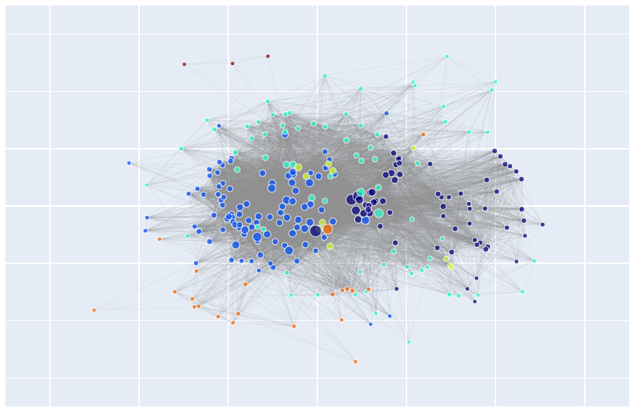

[Home] Carlo Debernardi - personal page
Here you can see a preview of a bibliographic coupling network of papers in the time span 1985-1995.
You can also find the related Sankey diagram of clusters with their year-to-year relations. Colors are arbitrarily assigned to source nodes, their children inherit weighted average color from parents.
You can find also some treemap about the clusters' composition: WoS categories (SC, SC reversed, WC), source journals, frequent words in titles.